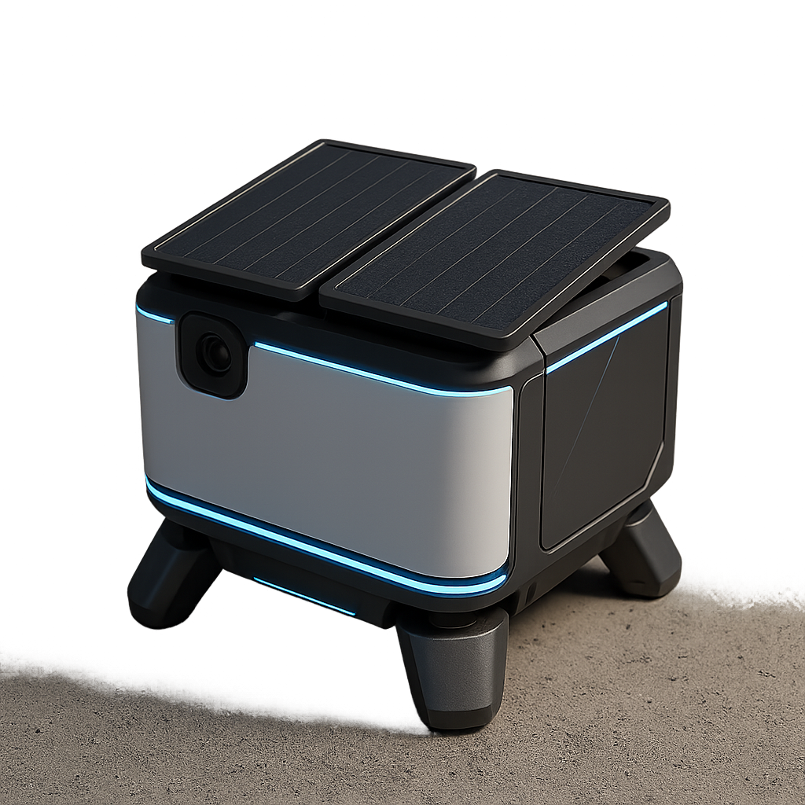
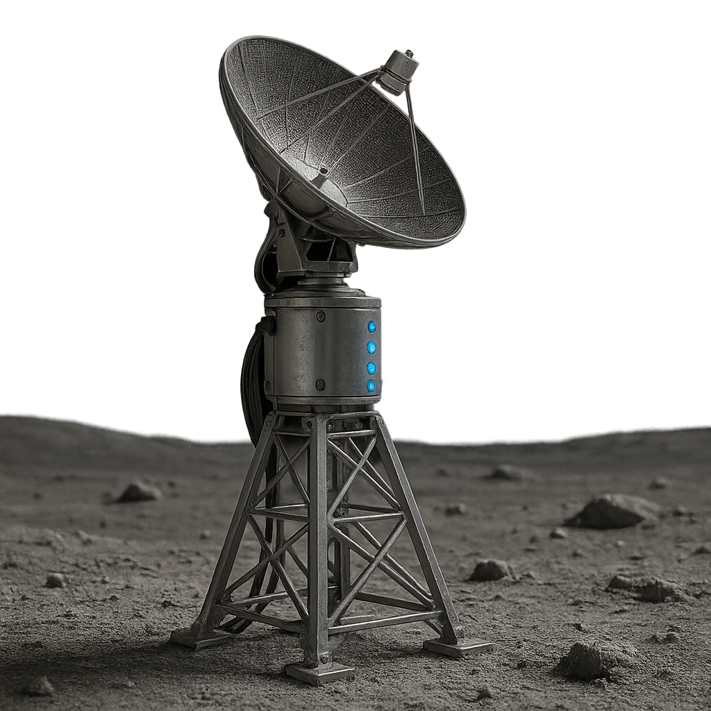
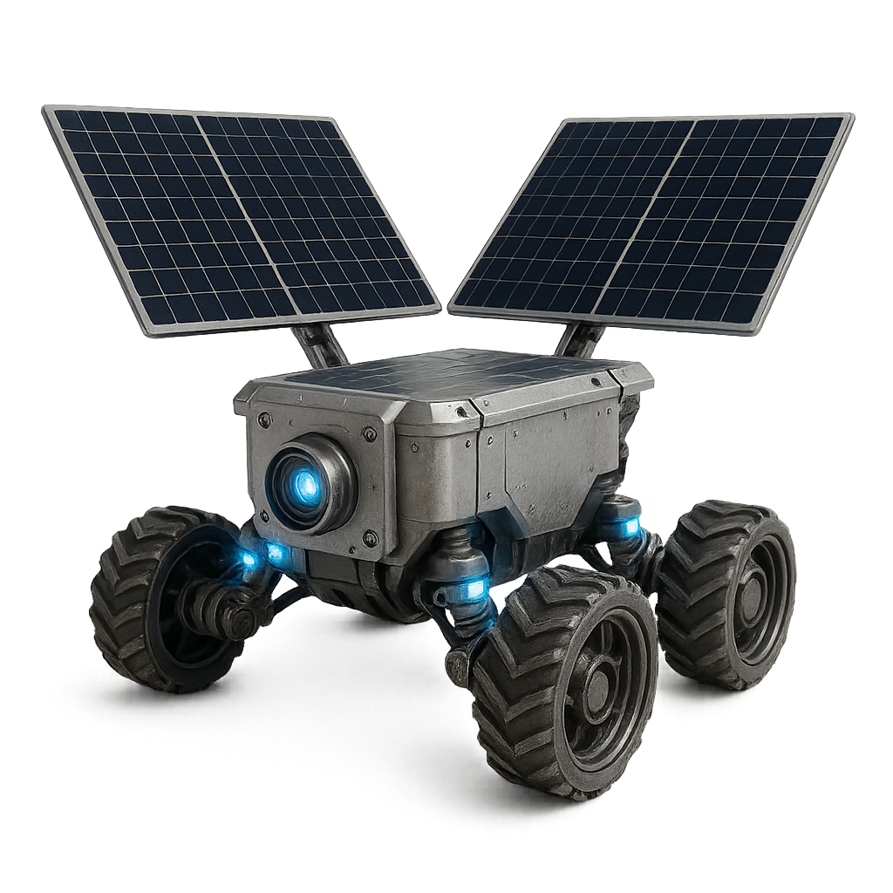

Solar arrays charge a fuel-cell energy-storage loop through the lunar day; an electrolyzer splits recovered water into hydrogen and oxygen, storing chemical energy that carries the system through the 14-day night. Thermal management keeps every stage within operating range across a ~300°C swing.
AI-tracked arrays convert lunar daylight into electrical power, sized independently per deployment.
Surplus power splits water into hydrogen and oxygen; both are stored as a night-cycle energy reserve.
Through the lunar night, stored hydrogen and oxygen recombine in a fuel cell to deliver continuous power — producing water as a byproduct that re-enters the cycle.
Our control software continuously rebalances load across generation, storage, and consumption — adapting in seconds as thermal and power conditions shift through the lunar day.
Every deployed unit reports telemetry back to a shared model that plans generation and distribution days in advance, and reroutes around faults autonomously.
Enabling technologies underneath the platform — not the product itself, but what makes the regenerative cycle possible in the lunar environment.
Reversible stack that both electrolyzes water (day) and generates power from stored hydrogen/oxygen (night) in a single unit.
High-efficiency electrolysis tuned for intermittent solar input and lunar vacuum/thermal conditions.
Active and passive thermal control keeping cells, storage tanks, and power electronics within range across day/night extremes.
The same regenerative cycle, sized up. Units combine into a shared grid without redesigning the underlying system.
Deployed independently or as one coordinated grid.

Autonomous deployable panels with AI-managed sun tracking and load balancing.

Fixed transmission infrastructure that distributes power across a shared surface grid.

Self-navigating units that reposition for optimal sun exposure and service remote payloads.
Mobile power and life-support gases for surface exploration.
Continuous power, oxygen, and water for crewed modules.
Process power for in-situ resource utilization operations.
Reliable off-grid power for remote instruments and strategic sites.
Unlike battery-only systems that fail through the lunar night, RTGs that can’t scale, or missions that import every consumable, Infinite Exploration’s platform regenerates its own power, gases, and water in place — and shares that capacity across missions.